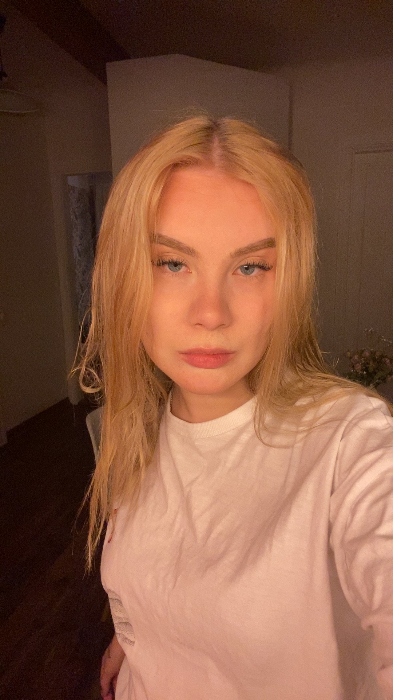

Gertrud Roos

A dedicated and versatile second-year computer science student at Tallinn University, combining academic knowledge in programming, mathematics, and informatics with hands-on experience in web developing. Passionate about problem-solving and technology, with additional interests in digital art, robotics, and creative pursuits. Skilled in communication, organizational tasks, and teamwork, with a strong background in customer service and sales environments. As a native Estonian I bring a grounded perspective, adaptability, and a commitment to continuous personal and professional growth.
Education
2023 - Present
Tallinn University - Bachelor's Degree in Computer Science
2021 - 2023
Viljandi Culture Acacemy - Bachelor's Degree in Computer Science
Work Experience
06.11.2023 - present
Game Presenter - Olybet Oü
Host live casino games, including Blackjack, Roulette and Baccarat, ensuring a professional and engaging experience for players;
Explain game rules and procedures clearly to players in real-time;
Manage player interactions via live chat, maintaining a fun and positive environment;
Ensure compliance with gaming regulations and company policies during live broadcasts;
Maintain strong communication and multitasking skills while managing both on-screen duties and behind-the-scenes coordination with the production team.
20.04.2023 - 06.11.23
Waitress - U-BISTROO
Responsible for maintaining a first-class level of customer service in a fast-paved environment, ensuring a welcoming and positive dining experience;
Demonstrated strong multitasking skills by managing multible tables and coordinating with team members to ensure timely service.
2021 - 2022
Administrator - Myfitness OÜ
Greeted and assisted members and visitors, providing excellent customer service to ensure a welcoming and professional gym environment;
Managed daily operations, including scheduling appointments, handling membership registrations, and processing payments;
Maintained a clean and organized front desk area, ensuring seamless administrative workflows;
Responded promptly to member inquiries in-person, via phone, and email, providing accurate information about services and facilities;
Collaborated with the team to ensure compliance with health and safety standards and promote a positive fitness culture.
Strengths and skills
Exceptional communication
Team player
Fast-paced
Solution oriented
Problem solver
Quick learner
Structured and dedicated
Analytical
Languages
Estonian - Native
English - Fluent(C1)
Russian - Intermediate(B1)
Finnish - Beginner(A1)